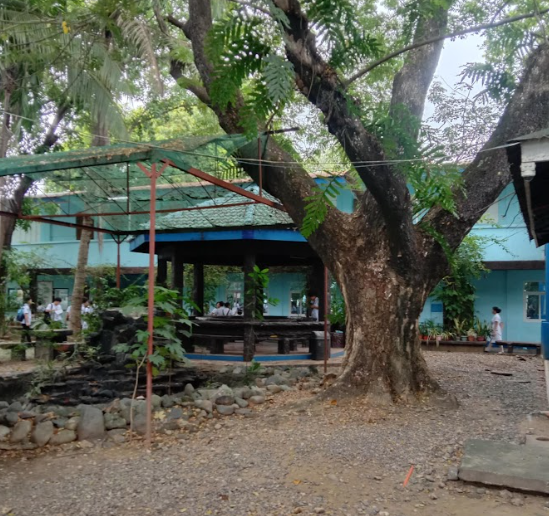
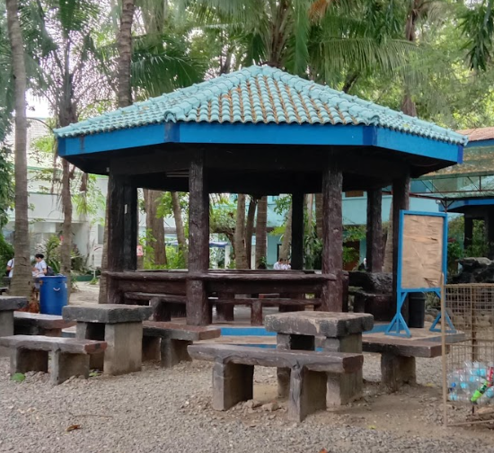
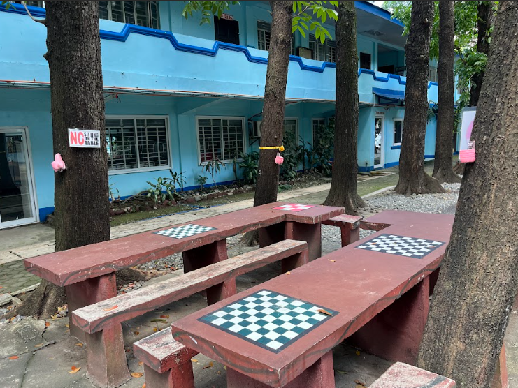

The outdoor spaces of Urdaneta City University (UCU)—featuring gazebos, benches, shaded walkways, landscaped gardens, and green open spaces—serve as more than recreational areas. They function as learning environments, wellness spaces, climate-responsive infrastructure, and community hubs that collectively contribute to 15 of the 17 United Nations Sustainable Development Goals (SDGs).

UCU Green Landscaping — Outdoor spaces integrated with trees and vegetation
UCU Outdoor Gazebo — Shaded area for student study and interaction
UCU Campus Benches — Resilient concrete and stone seatingGreen open spaces promote physical activity, relaxation, stress reduction, and mental wellness. The shaded seating areas provide safe places for rest, improving the well-being of students, faculty, staff, and visitors.
Gazebos and outdoor learning spaces provide alternative venues for classes, research discussions, collaborative learning, student consultations, and environmental education, supporting inclusive and innovative learning experiences.
Landscaped green areas improve natural rainwater infiltration, reduce surface runoff, and support sustainable campus water management while maintaining a clean and healthy environment.
The natural shade created by mature trees lowers surrounding temperatures, reducing cooling demands in nearby buildings and contributing to energy efficiency.
Well-maintained campus environments enhance productivity, support campus tourism and events, and create opportunities for employment in landscaping, maintenance, and environmental management.
Durable gazebos, benches, walkways, and outdoor facilities demonstrate resilient, sustainable infrastructure designed for long-term use while supporting innovative learning environments.
Accessible outdoor spaces encourage equal participation regardless of age, gender, socioeconomic background, or physical ability, fostering an inclusive campus community.
The integration of green landscapes with public gathering spaces creates safe, inclusive, resilient, and people-centered environments that model sustainable urban development.
Sustainable landscape maintenance, proper waste disposal, and responsible use of construction materials encourage environmentally responsible resource management across campus.
Trees and vegetation absorb carbon dioxide, reduce urban heat, improve air quality, and strengthen the university’s climate adaptation and mitigation initiatives.
The landscaped gardens and trees provide habitats for birds, insects, and other small wildlife while enhancing biodiversity and conserving terrestrial ecosystems within the campus.
The outdoor spaces promote peaceful interaction, student engagement, dialogue, and a safe campus environment that supports social harmony and institutional inclusivity.
These shared spaces facilitate collaboration among students, faculty, government agencies, NGOs, industry partners, and community organizations through meetings, outreach activities, and sustainability programs.
Accessible public spaces reduce barriers to learning by providing free study and collaboration areas, supporting equitable educational opportunities that contribute to long-term poverty reduction through education.
The university’s outdoor facilities are designed as safe, welcoming, and inclusive spaces where all genders can equally participate in academic, cultural, leadership, and community activities.
In summary, Urdaneta City University’s outdoor spaces demonstrate a Very High Impact, supporting 15 Sustainable Development Goals through integrated green infrastructure, inclusive learning environments, climate-responsive design, biodiversity conservation, community engagement, and sustainable campus development. These spaces embody UCU’s commitment to creating a resilient, healthy, and future-ready university that advances sustainable development both within the campus and in the wider community.